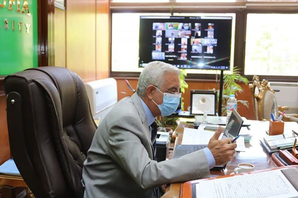
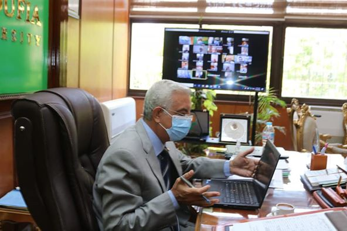
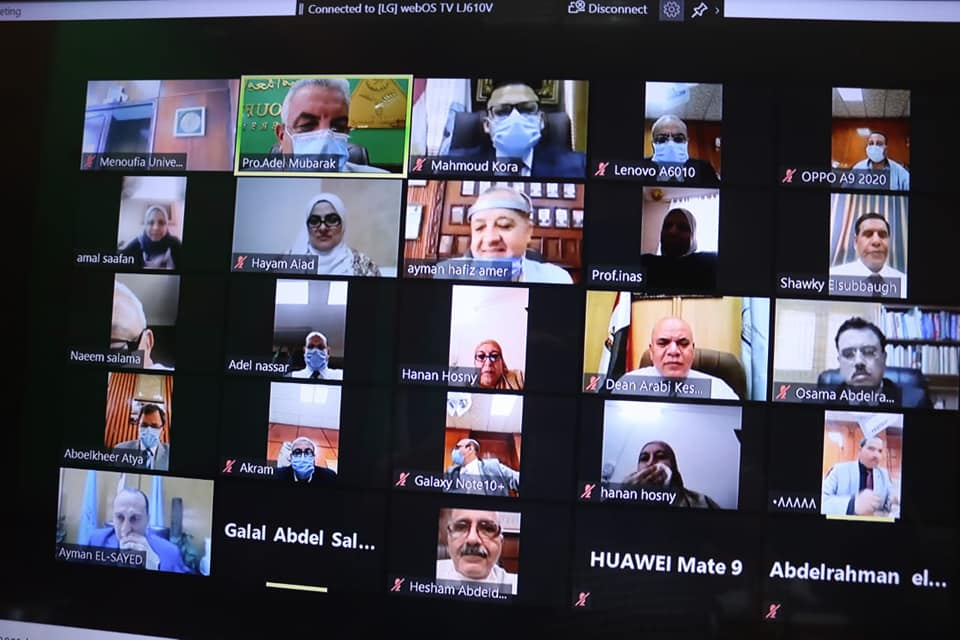
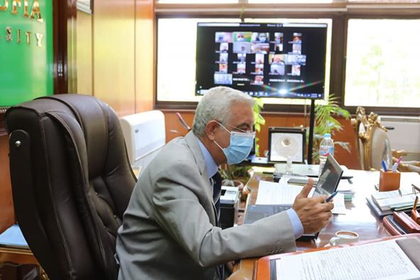
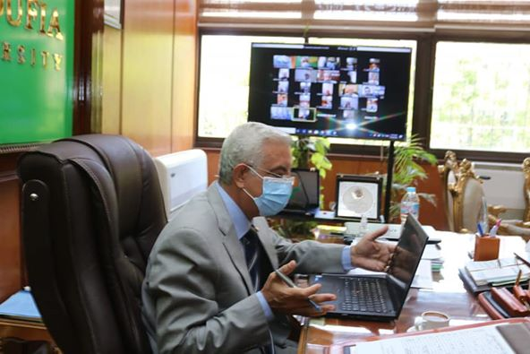
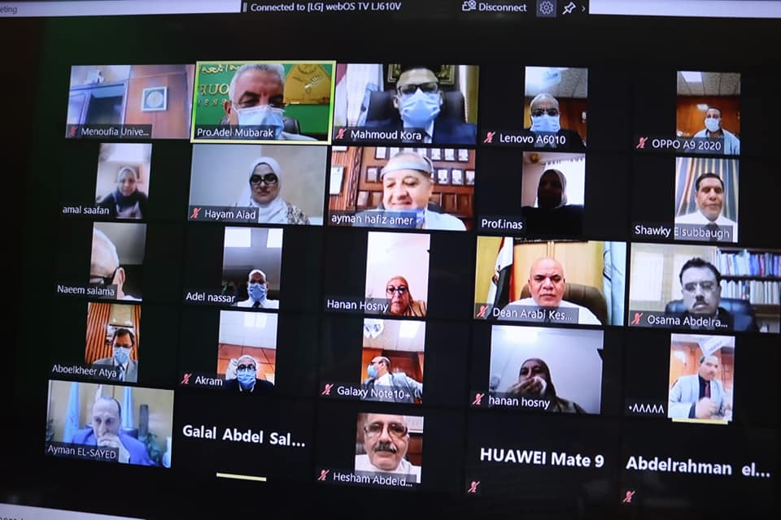
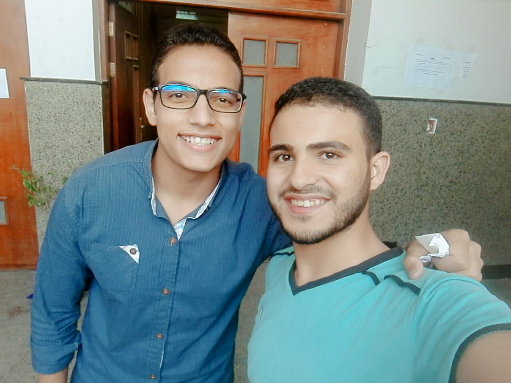
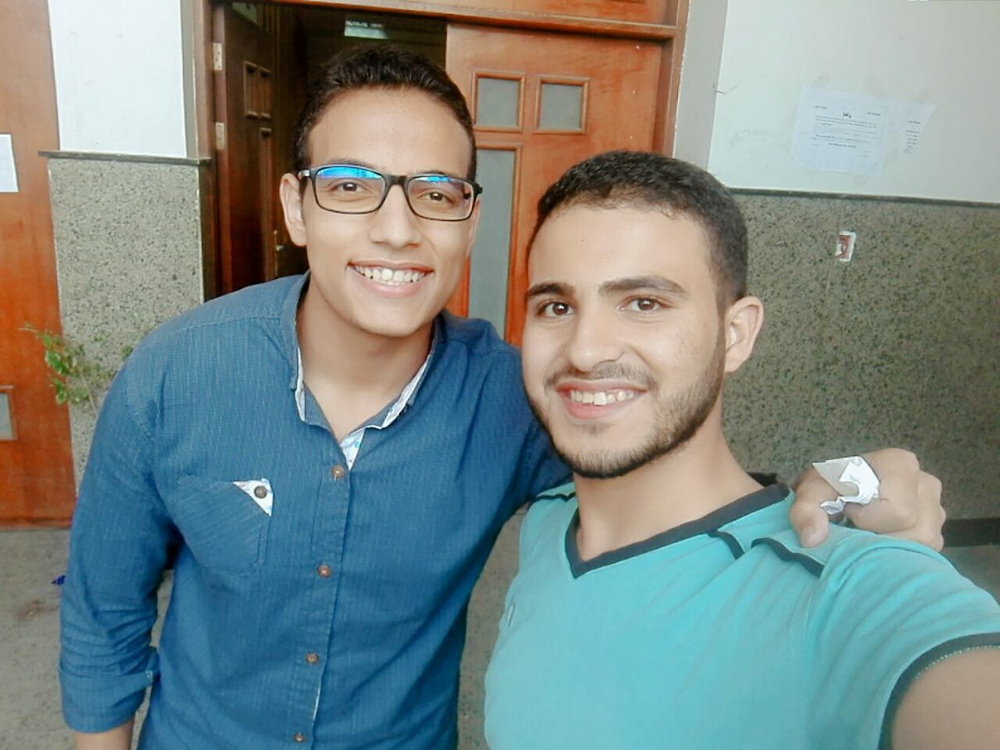

10 Feb. 2014
Support Team sent you an email
مبارك يعقد اجتماعه الشهرى بعمداء الكليات "أون لاين" ومتابعة الإستعدادات النهائية لامتحانات الفصل الدراسي الثاني
عقد اليوم الدكتور عادل مبارك رئيس جامعة المنوفية اجتماعه الشهرى بعمداء الكليات عبر موقع الاتصال الإلكترونى بمشاركة نائبا رئيس الجامعة الدكتور أحمد القاصد للدراسات العليا والبحوث والدكتور نانسى أسعد للتعليم والطلاب والمحاسب أكرم عبد الدايم أمين عام الجامعة لمناقشة الموضوعات التى تحتاج لدراسة قبل عرضها على مجلس الجامعة القادم، ومتابعة آخر المستجدات.
استهل رئيس الجامعة الاجتماع بتوجيه الشكر لجميع الأطقم الطبية بالمستشفى الجامعى ومعهد الكبد القومى لمجهوداتهم الكبيرة فى ظل الأزمة الراهنة لانتشار فيروس كورونا المستجد، وبدء العمل بمستشفى العزل بمعهد الكبد القومى وتقديم الخدمة الطبية والعلاجية للمصابين من اعضاء هيئة التدريس والعاملين بالجامعة، وتواجدهم بكامل طاقتهم والتعاون بينهم لتخطى الأزمة، معربا عن تقديره لكافة جنود الجيش الأبيض.
واستعرض رئيس الجامعة الاستعدادات النهائية لإجراء الامتحانات التحريرية لطلاب السنوات النهائية، والضوابط العامة الواجب اتباعها، والانتهاء من وضع الجداول بعد إجراء التعديلات ال
مبارك يعقد اجتماعه الشهرى بعمداء الكليات "أون لاين" ومتابعة الإستعدادات النهائية لامتحانات الفصل الدراسي الثاني
عقد اليوم الدكتور عادل مبارك رئيس جامعة المنوفية اجتماعه الشهرى بعمداء الكليات عبر موقع الاتصال الإلكترونى بمشاركة نائبا رئيس الجامعة الدكتور أحمد القاصد للدراسات العليا والبحوث والدكتور نانسى أسعد للتعليم والطلاب والمحاسب أكرم عبد الدايم أمين عام الجامعة لمناقشة الموضوعات التى تحتاج لدراسة قبل عرضها على مجلس الجامعة القادم، ومتابعة آخر المستجدات.
استهل رئيس الجامعة الاجتماع بتوجيه الشكر لجميع الأطقم الطبية بالمستشفى الجامعى ومعهد الكبد القومى لمجهوداتهم الكبيرة فى ظل الأزمة الراهنة لانتشار فيروس كورونا المستجد، وبدء العمل بمستشفى العزل بمعهد الكبد القومى وتقديم الخدمة الطبية والعلاجية للمصابين من اعضاء هيئة التدريس والعاملين بالجامعة، وتواجدهم بكامل طاقتهم والتعاون بينهم لتخطى الأزمة، معربا عن تقديره لكافة جنود الجيش الأبيض.
واستعرض رئيس الجامعة الاستعدادات النهائية لإجراء الامتحانات التحريرية لطلاب السنوات النهائية، والضوابط العامة الواجب اتباعها، والانتهاء من وضع الجداول بعد إجراء التعديلات النهائية
  
  
{kind=link}
{kind=link}
{kind=link}
{kind=link}
12:05
Support Team sent you an email
سريع القرارات اكثرهم ندماً. والمهتمّ بمشاعر الناس. أكثرهم حرصًا، والحكيم في مواقفه. أكثرهم صمتًا،
والمُبتسم لمن حوله. أكثرهم كرمًا
ياترا عندك كام صفه من الصفات دى؟
#كوتش_العلاقات
3 Jan. 2014
12:05
Support Team sent you an email
Etsy doostang zoodles disqus groupon greplin oooj voxy zoodles,
weebly ning heekya handango imeem plugg dopplr jibjab, movity
jajah plickers sifteo edmodo ifttt zimbra. Babblely odeo kaboodle
quora plaxo ideeli hulu weebly balihoo...



{kind=link}